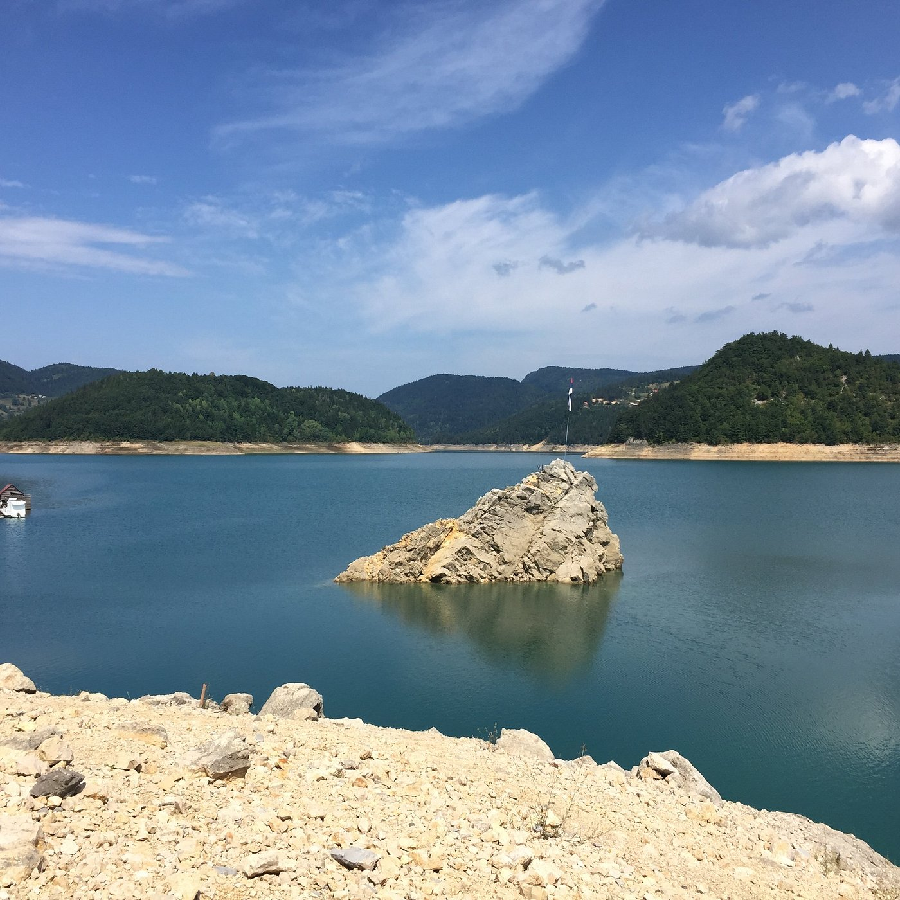

Bašta est un charmant village niché au cœur de la nature et entouré par un magnifique parc national. Les environs offrent de nombreuses activités pour tous les goûts. La ville possède également de nombreux cafés et restaurants où vous pourrez savourer la cuisine locale et profiter de l'ambiance chaleureuse des lieux. Que vous soyez amateur de détente ou d'aventure, Bašta saura vous séduire par son authenticité et sa convivialité.
Petit lac accessible à 20mn en voiture ou un peu plus en bus, possible d'y louer des kayaks et des
pédalos.
Un café surplombe le lac et propose des boissons et des glaces.
C'est le point de départ
pour le bateau vers Višegrad (voir plus bas).
Description de l'activité 2. (Remplissez ici)
Description de l'activité 3. (Remplissez ici)